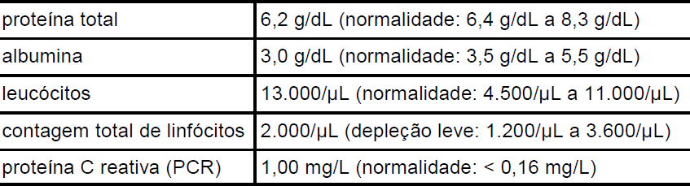

Um jovem de 17 anos de idade foi encaminhado para internação no serviço de emergência de um
hospital, com diagnóstico de crise aguda de doença inflamatória intestinal (DII). O paciente tem história
recente de distensão e dores abdominais, fezes líquidas e receio de alimentar-se, em função do quadro
álgico. O jovem encontra-se visivelmente emagrecido. O nutricionista responsável prescreveu dieta por
via oral, com característica constipante.
A tabela ao lado apresenta resultados referentes a
exames bioquímicos do paciente cujo quadro clínico
está descrito no texto. Com relação às informações
apresentadas, assinale a opção correta.

-
A proteína total é um indicador bioquímico
sensível do estado nutricional, estando o seu
nível sanguíneo comprometido no paciente, provavelmente devido a baixa ingestão alimentar e má absorção de
nutrientes.
-
A albumina sérica, apesar de ser indicador muito utilizado na prática clínica, se altera na DII devido a menor síntese
realizada pelos enterócitos, sendo, portanto, pouco útil como parâmetro nutricional do referido paciente.
-
O valor de leucócitos observado deve-se, provavelmente, ao processo inflamatório ativo, característico da fase aguda
da doença, e configura-se como parâmetro que indica desnutrição aguda do tipo evolutiva.
-
A contagem linfocitária total nesse paciente é indicador impreciso do seu estado nutricional, pois a mesma deve estar
mascarada pelos valores de leucócitos aumentados.
-
O resultado da PCR é compatível com o estado de DII agudizada, sendo que a melhora desse parâmetro é sugestivo
de remissão da fase aguda e de anabolismo do paciente.